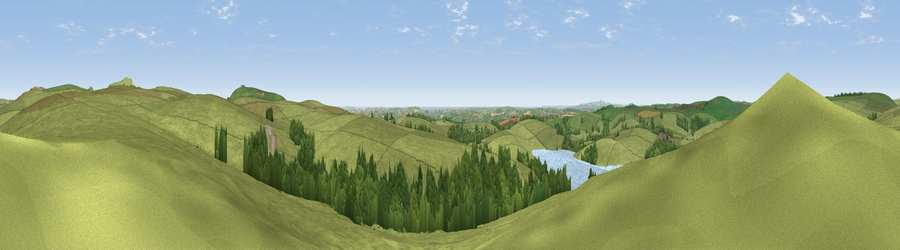

Tregarrick Tor
#9045 in England · top 17% of its area beats it · near St CleerThe view, rendered

A 360° render of this exact spot computed from the terrain model, tree cover and land cover — summer colours, afternoon light, calibrated against photographs of famous viewpoints. Real trees, hedges and buildings will differ in detail.
The panorama
Grey silhouette: terrain skyline in each direction (720 bearings, Earth curvature and refraction included). Dashed green: skyline with trees (+15 m) and buildings (+8 m) as obstacles. Blue strip: how far the ground is visible on each bearing.
Where the view opens
Wedge length = distance to the farthest visible ground on that bearing (vegetation-aware). Rings at 10, 25 and 50 km.
What fills the view
83% grassland · 10% woodland · 5% water · 1% cropland ·
Angular shares of the visible panorama (visual magnitude), not map area. Landscape diversity 0.26 (0–1 Shannon).
Key numbers
More beautiful places nearby
The staircase of upgrades: each row has a higher view potential than everything closer. Driving times are estimates from straight-line distance, calibrated against real road routing — check an actual route before setting out.
| Place | Direction | Drive | Score |
|---|---|---|---|
| Viewpoint near Henwood | NE · 2 km | ~5 min | 77.3 |
| Caradon Hill | E · 3 km | ~8 min | 78.5 |
| Kit Hill | E · 13 km | ~24 min | 80.3 |
| Viewpoint near Seaton | SSE · 17 km | ~30 min | 81.1 |
| Viewpoint near Downderry | SSE · 18 km | ~31 min | 81.5 |
| Viewpoint near Downderry | SSE · 20 km | ~33 min | 83.5 |
| Viewpoint near Polperro | SSW · 21 km | ~35 min | 83.7 |
| Pencarrow Head | SSW · 22 km | ~37 min | 86.0 |
50.51389, -4.48132 · source: osm peak · position refined by local search. Computed location — check access rights before visiting.